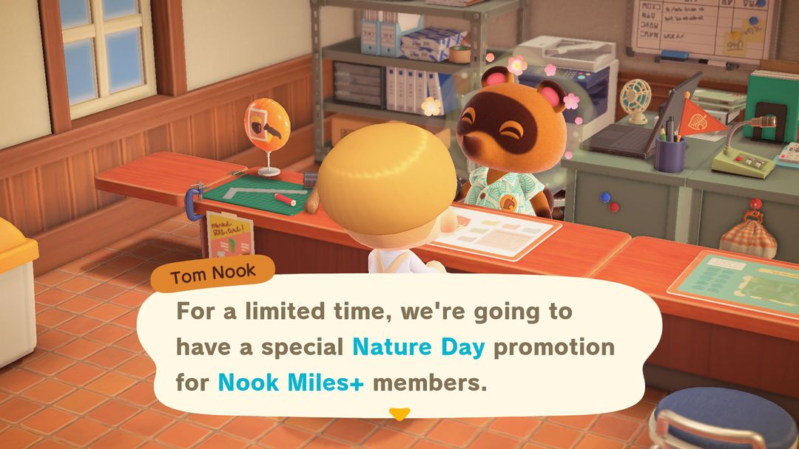
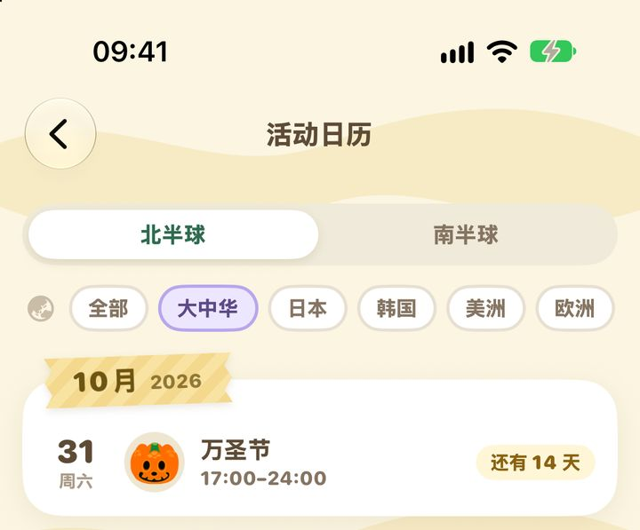

地球日：2021 年起只剩一个限定地球仪
2020 年那套集里游＋活动已经关了，之后怎么过、树篱的DIY手册去哪拿
英文版叫 Nature Day，游戏简体中文里叫「地球日」。翻老攻略常会看到「做环保任务拿 5 倍里数」，那是 2020 年的玩法：当时每天一项环保任务，里数翻 5 倍。1.9.0 更新把这套关掉了，之后再也遇不到。
1.9.0 以后的地球日简单得多：每年 4 月 15 日到 22 日，南北半球一样，Nook购物里会上架一件限定的「帅气地球仪」，2,300 铃钱。这 8 天里随便哪天订一个就行，不用特意准备什么。原来做任务拿的树篱DIY手册，现在改到然然那里拿，在他那买东西满 3 个不同的日子就给。下面先说 1.9.0 以后能拿的东西，再回头讲讲 2020 年的老玩法。
01哪几天
1.9.0 之后，地球日固定在每年 4 月 15 日到 4 月 22 日，南北半球同一时间，也不像复活节那样每年换日子，年年都是这几天。
这几天岛上没有人来主持，广场上也不会搭什么布置，安安静静的，很容易就这么过去了。好在游戏里会收到一条「Nook购物 期间限定商品新闻」，提醒你地球仪上架了。
02怎么订地球仪
打开手机里的 Nook购物，或者去服务处用狸端机，翻到期间限定那一栏就能看到：
| 东西 | 价格 | 什么时候能订 |
| 帅气地球仪 | 2,300 铃钱 | 4 月 15 日～22 日 |
订完第二天寄到信箱。过了 4 月 22 日，目录里也订不了，想要只能再等一年，所以这几天里记得抽空下个单。
帅气地球仪是个小摆件，能摆在地上，也能搁在桌子、柜子上。它和 Nook商店平时卖的「地球仪」是两件东西，别弄混了。

2020 年的地球日：狸克说集里游＋有限时活动（英文版画面）（图：Nookipedia）
032020 年的地球日是什么样
第一年的地球日在 2020 年 4 月 23 日到 5 月 4 日。那几天，Nook集里游＋里每天会多出一项带绿框、小芽图标的任务，做完能拿平时 5 倍的里数。做完第一项再去找狸克，他会送你「树篱」的DIY手册。
当时出现过的任务大多和种花种树有关：
| 任务 | 里数 |
| 移栽树木 | 100 |
| 在沙滩种椰子 | 150 |
| 做栅栏 | 150 |
| 用花装饰、戴着花出门 | 各 150 |
| 种花种子（8 种花各一项） | 各 200 |
| 种灌木苗 | 200 |
| 送花给岛民 | 200 |
| 摘花做花冠、用花做花环 | 各 300 |
1.9.0 更新后，2020 年的那段日期被关掉，这些任务也就永远做不到了。就算把岛上时间调回 2020 年 4 月底，也不会再出现。
04树篱的DIY手册去哪拿
树篱就是围迷宫用的那种绿篱笆，材料是杂草 10、树枝 5、石头 2，都是岛上随手能捡到的东西。1.9.0 之后它只剩一个来路：在然然那里买东西，凑满 3 个不同的日子，他就会把DIY手册给你。一天里买多少件都只算一天，所以每次去买一样就够，分三天去。
小提示怕记不住日子，可以翻动森圈圈的「活动日历」。北半球、南半球分开列，地球日这种 Nook购物限定也在里面。

动森圈圈的活动日历（App 截图）
05还有几件小事
只想要地球仪的话，4 月 15 日到 22 日随便哪天订都行，不用守着第一天。岛上调过时间的，按游戏里的日期算，不看手机上的日期。
2020 年那份 5 倍里数没办法补了，平时的集里游＋任务照常做就好。
地球仪卖掉只值 575 铃钱，是买价的四分之一，订一个摆着就够，多订了不划算。
地球日一过，4 月 29 日就到劳动节了，狸克会送你一张去迷宫小岛的旅行券，记得留出时间去走一趟。
06这几年改过什么
地球日在 2020 年作为正式活动加入；2021 年的 1.9.0 把它改成 Nook购物的限定商品，帅气地球仪也是这时候出的。2.0 和 3.0 没有再改。
动森圈圈 · 小程序和 iOS App 都搜「动森圈圈」